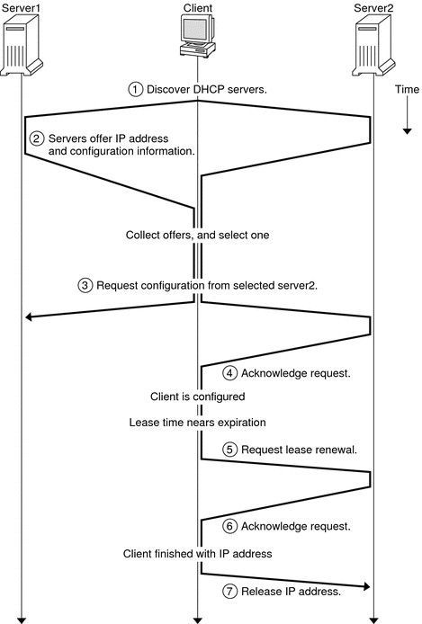

Document Information
Preface
Part I TCP/IP Administration
1. Solaris TCPIP Protocol Suite (Overview)
2. Planning an IPv4 Addressing Scheme (Tasks
3. Planning an IPv6 Addressing Scheme (Overview)
4. Planning an IPv6 Network (Tasks)
5. Configuring TCP/IP Network Services and IPv4 Addressing (Tasks)
6. Administering Network Interfaces (Tasks)
7. Enabling IPv6 on a Network (Tasks)
8. Administering a TCP/IP Network (Tasks)
9. Troubleshooting Network Problems (Tasks)
10. TCP/IP and IPv4 in Depth (Reference)
11. IPv6 in Depth (Reference)
Part II DHCP
12. About Solaris DHCP (Overview)
About the DHCP Protocol
Advantages of Using Solaris DHCP
Solaris DHCP Server
Solaris DHCP Client
13. Planning for DHCP Service (Tasks)
14. Configuring the DHCP Service (Tasks)
15. Administering DHCP (Tasks)
16. Configuring and Administering DHCP Clients
17. Troubleshooting DHCP (Reference)
18. DHCP Commands and Files (Reference)
Part III IP Security
19. IP Security Architecture (Overview)
20. Configuring IPsec (Tasks)
21. IP Security Architecture (Reference)
22. Internet Key Exchange (Overview)
23. Configuring IKE (Tasks)
24. Internet Key Exchange (Reference)
25. Solaris IP Filter (Overview)
26. Solaris IP Filter (Tasks)
Part IV Mobile IP
27. Mobile IP (Overview)
28. Administering Mobile IP (Tasks)
29. Mobile IP Files and Commands (Reference)
Part V IPMP
30. Introducing IPMP (Overview)
31. Administering IPMP (Tasks)
Part VI IP Quality of Service (IPQoS)
32. Introducing IPQoS (Overview)
33. Planning for an IPQoS-Enabled Network (Tasks)
34. Creating the IPQoS Configuration File (Tasks)
35. Starting and Maintaining IPQoS (Tasks)
36. Using Flow Accounting and Statistics Gathering (Tasks)
37. IPQoS in Detail (Reference)
Glossary
Index
|
How DHCP Works
You must first install and configure the DHCP server. During configuration, you specify
information about the network that clients need to operate on the network. After
this information is in place, clients are able to request and receive network
information. The sequence of events for DHCP service is shown in the following
diagram. The numbers in circles correlate to the numbered items in the description following
the diagram. Figure 12-1 Sequence of Events for DHCP Service The preceding diagram shows the following steps:
The client discovers a DHCP server by broadcasting a discover message to the limited broadcast address (255.255.255.255) on the local subnet. If a router is present and configured to behave as a BOOTP relay agent, the request is passed to other DHCP servers on different subnets. The client's broadcast includes its unique ID, which, in the Solaris DHCP implementation, is derived from the client's Media Access Control (MAC) address. On an Ethernet network, the MAC address is the same as the Ethernet address. DHCP servers that receive the discover message can determine the client's network by looking at the following information:
Which network interface did the request come in on? The server determines either that the client is on the network to which the interface is connected, or that the client is using a BOOTP relay agent connected to that network. Does the request include the IP address of a BOOTP relay agent? When a request passes through a relay agent, the relay agent inserts its address in the request header. When the server detects a relay agent address, the server knows that the network portion of the address indicates the client's network address because the relay agent must be connected to the client's network. Is the client's network subnetted? The server consults the netmasks table to find the subnet mask used on the network indicated by the relay agent's address or by the address of the network interface that received the request. Once the server knows the subnet mask used, it can determine which portion of the network address is the host portion, and then it can select an IP address appropriate for the client. See the netmasks(4) man page for information on netmasks.
After the DHCP servers determine the client's network, the servers select an appropriate IP address and verify that the address is not already in use. The DHCP servers then respond to the client by broadcasting an offer message. The offer message includes the selected IP address and information about services that can be configured for the client. Each server temporarily reserves the offered IP address until the client determines whether to use the IP address. The client selects the best offer, based on the number and type of services offered. The client broadcasts a request that specifies the IP address of the server that made the best offer. The broadcast ensures that all the responding DHCP servers know that the client has chosen a server. The servers that are not chosen can cancel the reservations for the IP addresses that they had offered. The selected server allocates the IP address for the client and stores the information in the DHCP data store. The server also sends an acknowledgement message (ACK) to the client. The acknowledgement message contains the network configuration parameters for the client. The client uses the ping utility to test the IP address to make sure no other system is using it. The client then continues booting to join the network. The client monitors the lease time. When a set period of time has elapsed, the client sends a new message to the chosen server to increase the lease time. The DHCP server that receives the request extends the lease time if the lease still adheres to the local lease policy set by the administrator. If the server does not respond within 20 seconds, the client broadcasts a request so that one of the other DHCP servers can extend the lease. When the client no longer needs the IP address, the client notifies the server that the IP address is released. This notification can happen during an orderly shutdown and can also be done manually.
|